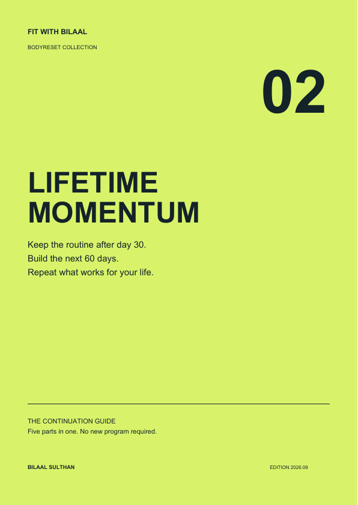
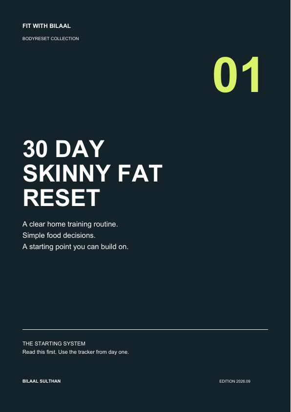

FOR MEN STARTING FROM SKINNY FAT
Stop guessing.
Start building
a stronger body.
A self guided 30 day system for men who want a smaller waist, more visible muscle and a clear routine to follow.
Three home strength sessions a week. Simple nutrition guidance. A plan for what happens after day 30.
Get the complete Reset ↗$47 USD once. Three PDFs. No subscription.
Work toward the outcome. No promised transformation deadline.


3strength sessions each week
30days of clear next steps
90days of reusable tracking
$47USD, one payment
SOUND FAMILIAR?
You don't need another
saved workout.
You need a routine.
You want to look leaner, but eating less without a strength plan doesn't feel like a clear answer.
You save exercises, switch routines and still wonder what you should do today.
You can start a good week. Keeping it going when work gets busy is the harder part.
This collection gives you the next session, the next decision and a place to record the work.
ONE METHOD. THREE CONNECTED GUIDES.
Start here.
Keep going from here.
Your Reset is the main program. The continuation guide and tracker are included bonuses, with a distinct job for each.
YOUR MAIN PROGRAM
30 Day Skinny Fat Reset
Know what to do on day one, then follow a routine you can repeat.
- Strength A, B and C with sets, reps, rest and written movement cues
- Home training with bodyweight and a securely loaded backpack
- A 30 day calendar, walking days and simple meal templates
- Clear options to make an exercise easier or progress it safely
INCLUDED BONUS / CONTINUE
Lifetime Momentum Guide
Day 30 doesn't leave you wondering what to buy or do next.
- Your five part framework, brought together in one guide
- A continuation map for days 31 through 90
- Rules for progressing, repeating or reducing your training
- Nutrition, busy week fallbacks and a routine to reuse after day 90
INCLUDED BONUS / TRACK
90 Day Progress Tracker
Keep a record you can use, instead of trying to remember whether you're improving.
- Fillable workout logs and a completed example
- Weekly reviews, with optional waist and weight records
- Checkpoints at days 30, 60 and 90
- Printable pages you can reuse beyond the first 90 days
A fillable PDF, not an app. No automatic graphs or syncing.
THE ROUTINE
Your week.
Without the guesswork.
Start with two sets per exercise. Practise the movements. Progress when you earn it, with recovery between strength days.
Move the days to fit your week while keeping recovery between strength sessions. This is a general plan, not personalized programming.

FROM BILAAL
I've been at
that starting point.
I went from skinny fat to a leaner, stronger physique. I know why you want more than another list of exercises.
I put this collection together around the training, food decisions and review habits I use in my approach. The aim is simple: make the next step clear enough to follow on your own.
You get the structure. You do the work. Your progress and timeline will be individual.
COACHING CLIENT EXAMPLES
Experience behind
the structure.
These clients received personal coaching. Their photos show individual journeys, not results from this PDF alone. No 30 day timeframe is implied.


The $47 collection is self guided. It does not include the individual guidance or accountability those coaching clients received.
IS THIS YOUR STARTING POINT?
Structure for you.
Not coaching for you.
A clear boundary means you know what you're buying.
A useful fit if you want to
- Start a beginner home training routine with minimal equipment
- Work toward a leaner, stronger body without a crash diet
- Follow written guidance independently and track your own work
Choose a different option if you need
Personalized programming, injury rehabilitation, an individual meal prescription, exercise videos, messaging or check ins. None of those are included here.
THE COMPLETE BODYRESET COLLECTION
Your first month.
Your next step.
One clear purchase.
Start with the Reset. Keep the Momentum Guide and Tracker beside it. No extra purchase is needed to continue.
Preview only. Checkout is not connected.
All three PDFs included
- 0130 Day Skinny Fat ResetYour first month of structure
- 02Lifetime Momentum GuideIncluded continuation bonus
- 0390 Day Progress TrackerIncluded tracking bonus
After a successful live purchase, the intended flow is a download page with all three files and an email with an access link. This preview lets you test the download page now.
No app, subscription, community or personal coaching. You keep the downloaded files. Future updates are not included.
BEFORE YOU START
The questions
worth asking.
Will I be shredded in 30 or 90 days?
No specific result or deadline is guaranteed. The first 30 days establish your routine. Your starting point, consistency, nutrition, recovery and other individual factors affect progress. The continuation guide helps you keep working beyond the reset.
Do I need a gym or special equipment?
No gym is needed. You need clear floor space, a stable chair, a fixed counter or wall and a secure backpack you can load safely. Pulling and hinging exercises use the backpack. This is not a completely equipment free plan.
What happens after day 30?
Continue the same weekly routine and tracker. The included Lifetime Momentum Guide gives you a days 31 to 90 map, progression decisions and principles to reuse afterward. Lifetime means reusable guidance, not lifetime coaching or ongoing updates.
Can I use the tracker on my phone?
The tracker has fillable fields. Use a PDF reader that supports saving forms and test a saved entry first; some phone preview apps do not preserve them. You can also print the pages. It does not calculate trends or sync automatically.
Are there videos or one to one support?
No. You receive written exercise cues, easier variations and progression rules. Videos, Trainerize, personalized adjustments, messaging, calls and community access are not included.
Who should get individual advice first?
This is general education for generally healthy adults, not treatment or rehabilitation. If you have medical conditions, injuries or dietary restrictions, seek qualified guidance. It is not a weight loss plan for minors, people who are underweight or anyone with a history of disordered eating.
Can I purchase this page right now?
No. This is a private working preview. Payment, purchase verification and automated delivery are not connected. Refund terms, business contact details and checkout policies must be confirmed before the live launch. No card or personal information is collected here.